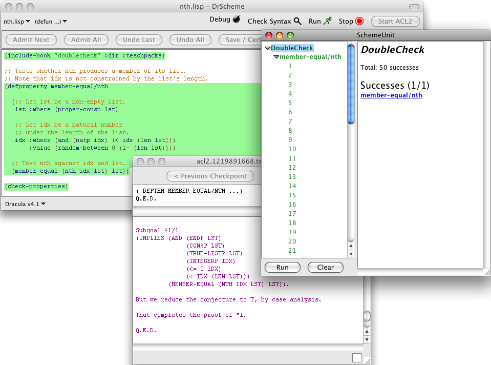

3 Doublecheck
DoubleCheck is a Dracula teachpack for randomized testing. It is inspired by the QuickCheck library for Haskell, and implemented with the FastTest library for PLT Scheme. DoubleCheck may be used before theorem proving to establish confidence in a program property, or after a failed proof attempt to search for counterexamples.
3.1 Examples
Here is an example of a DoubleCheck property with an error, and the resulting output from both DoubleCheck and ACL2. The property attempts to prove that nth produces a member of its input, without establishing that its input is in range. Note that DoubleCheck detects 19 errors out of the visible 21 trials, the first of which is shown in the SchemeUnit window (on the right). We can see here that in this trial, lst was ("yyhhp") and idx was 386. Doublecheck also automatically provides a check-expect expression, to incorporate this trial into a test suite. The ACL2 output (middle) shows checkpoints from the faulty theorem corresponding to the DoubleCheck property.

Here is a corrected version of the same DoubleCheck property. Now the index to nth is constrained based on the length of the list, and its random distribution is stated explicitly. Both the DoubleCheck and ACL2 output show success.

For more detailed information, see "doublecheck" in Dracula: Reference Manual.